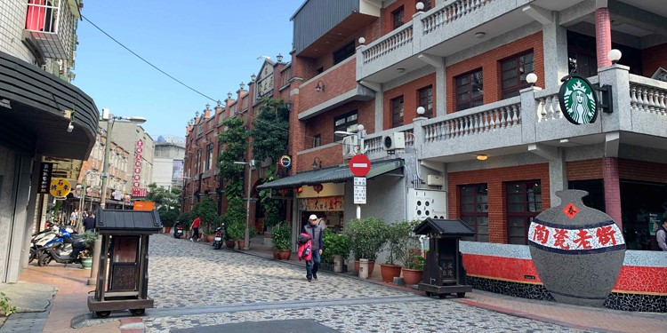

鶯歌陶瓷老街
鶯歌陶瓷老街所指的是位於新北市鶯歌區上，以陶瓷業為主要商業活動的區域。最早聚集於文化路以及尖山埔路，現今則包含了尖山埔路、重慶街、育英街等，由於鶯歌陶瓷產業已經相當發達，也具全國、甚至國際性知名度，已演化為具陶瓷業商業活動及觀光景點兼具的區域。特色商品有：日用陶瓷、生活陶瓷、藝術陶瓷精品、茶具、爐鍋具、餐具、花瓶、飾品。
交通資訊
- 公車
- 火車：搭火車站鶯歌火車站下車，沿文化路接重慶街步行約8-10分鐘即可抵達。
- 公車或客運:917、981、851、702、5001等至「國慶街站」下車，沿著國慶街走，右轉重慶街，步行約2分鐘即可抵達。
- 自行前往
導航至「鶯歌陶瓷老街」，地址是新北市鶯歌區尖山埔路，週圍停車場如鶯歌區公共造產停車場、Times鶯歌文化路停車場、三號公園前尖山埔路停車場等